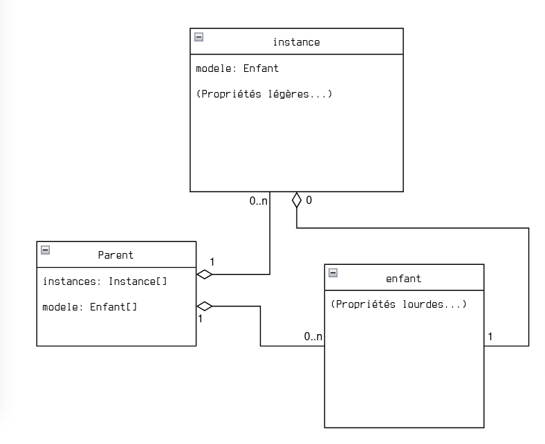
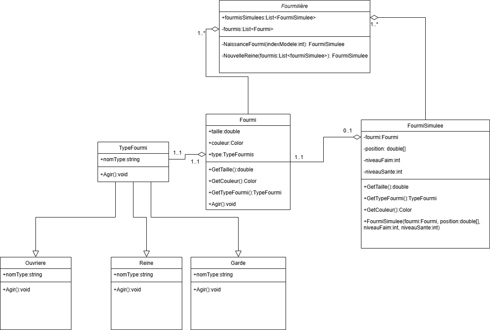

Flyweight¶
Personnes autrices : James Bélisle et Nola Bellerose Patron lié : Factory
Fonctionnement du patron¶
Le patron de conception Flyweight permet de réduire l'utilisation de la mémoire en partageant les données communes entre plusieurs objets.
Plutôt que de stocker les mêmes informations dans chaque objet, on centralise les données partagées dans un objet commun.

Avantages et désavantages¶
Avantages¶
- Réduit l'utilisation de la mémoire lorsque de nombreux objets partagent les mêmes données.
- Évite la duplication des informations communes.
- Peut améliorer les performances dans les systèmes contenant beaucoup d'objets.
Désavantages¶
- Augmente la complexité du code en ajoutant des classes et des relations.
- Nécessite de distinguer les données partagées des données propres à chaque objet.
- Peut être inutile si les objets ne sont pas réutilisés fréquemment (YAGNI).
Exemple d'utilisation : une fourmilière¶

Figure 1 — Diagramme UML d'un simulateur de fourmilière.Dans ce simulateur, plusieurs fourmis peuvent partager un même modèle contenant leurs caractéristiques communes.
Par exemple, la taille, la couleur et le type de fourmi peuvent être partagés, tandis que la position et le niveau de santé restent propres à chaque fourmi.
Exemple de code : Lua¶
On peut créer un modèle de fourmi, puis le transmettre à plusieurs fourmis simulées.
local fourmi = Fourmi.new()
local fourmi_simulee1 = FourmiSimulee.new(fourmi)
local fourmi_simulee2 = FourmiSimulee.new(fourmi)
local fourmi_simulee3 = FourmiSimulee.new(fourmi)
Les trois fourmis simulées utilisent la même référence vers l'objet fourmi.
Ainsi, les informations communes ne sont pas dupliquées dans chaque instance.
Exemple de code dans un langage objet implicite Répertoire Git
Exemple de classe : Fourmi.cs¶
Cette classe contient les caractéristiques communes aux fourmis.
public class Fourmi
{
private Color _couleur;
private int _taille;
private TypeFourmi _type;
public Fourmi()
{
_couleur = Color.Red;
_taille = 4;
_type = new Ouvriere();
}
}
Le modèle conserve les données partagées, comme la couleur, la taille et le type de fourmi.
Exemple illustratif en C# ; Color et TypeFourmi dépendent des classes et bibliothèques du projet.
Exemple de classe : FourmiSimulee.cs¶
Chaque fourmi simulée conserve uniquement ses données individuelles et une référence vers son modèle.
public class FourmiSimulee
{
private Fourmi _modeleFourmi;
private Vector3 _position;
private int _niveauFaim;
private int _niveauSante;
public FourmiSimulee(Fourmi fourmi)
{
_modeleFourmi = fourmi;
// Initialisation des données individuelles
}
}
La position, la faim et la santé varient d'une fourmi à l'autre, contrairement aux caractéristiques communes du modèle.
Création de nouvelles fourmis¶
On commence par créer un seul modèle partagé.
Ensuite, chaque nouvelle fourmi simulée reçoit une référence vers ce modèle.
FourmiSimulee fourmi1 =
new FourmiSimulee(modeleFourmi);
FourmiSimulee fourmi2 =
new FourmiSimulee(modeleFourmi);
Résultat : les deux fourmis partagent les caractéristiques du même modèle, mais possèdent chacune leurs propres données individuelles.
Exemple de code dans un langage objet explicite Répertoire Git
Références¶
- Refactoring.Guru. (2026, 1 janvier). Flyweight. https://refactoring.guru/design-patterns/flyweight
- GeeksforGeeks. (2026, 7 mai). Flyweight design pattern. https://www.geeksforgeeks.org/system-design/flyweight-design-pattern
- Hello Byte. (2024, 27 juillet). Flyweight Design Pattern: Easy Guide for Beginners [Vidéo]. YouTube. https://www.youtube.com/watch?v=6cj-VxC8CxI